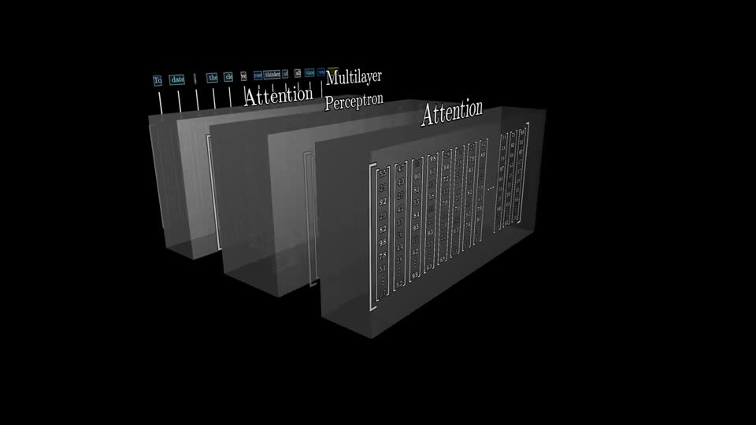
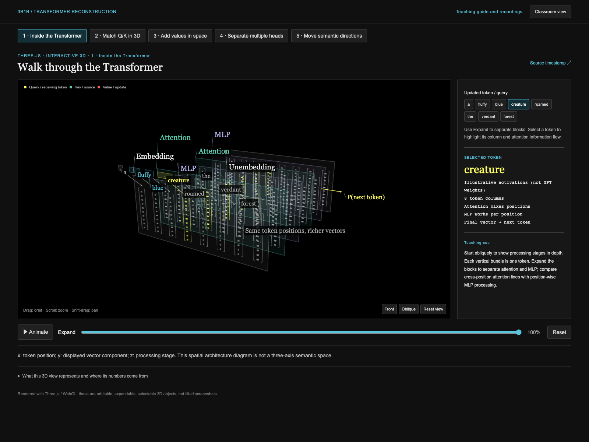
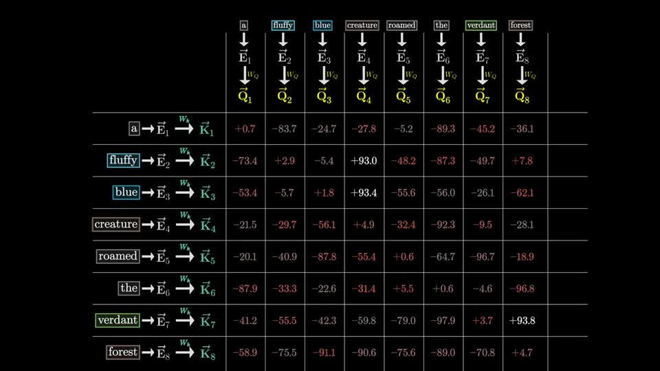
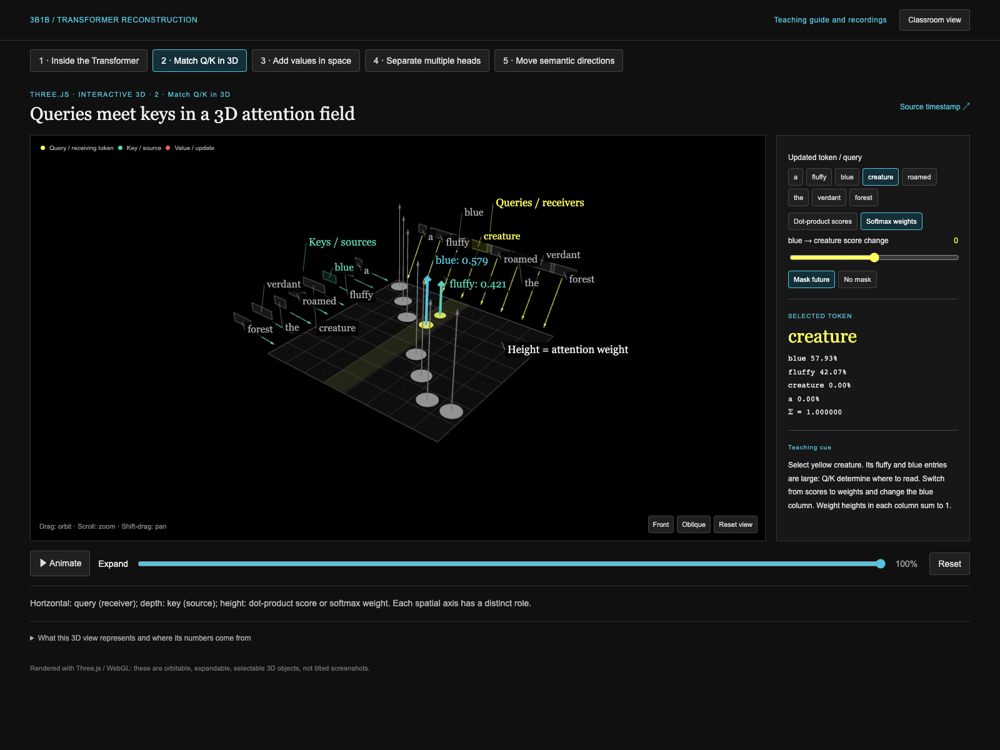
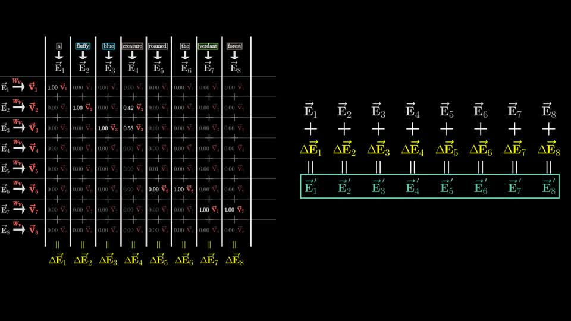
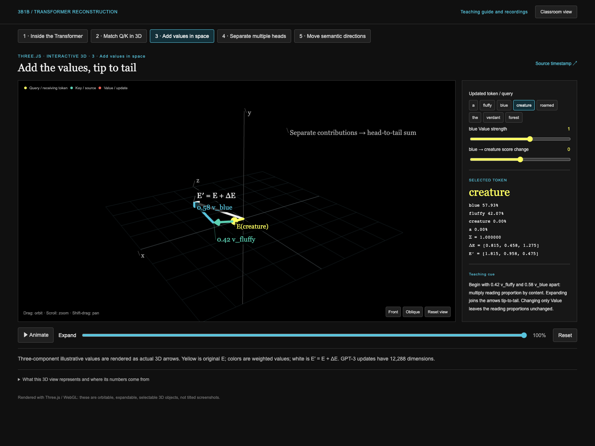
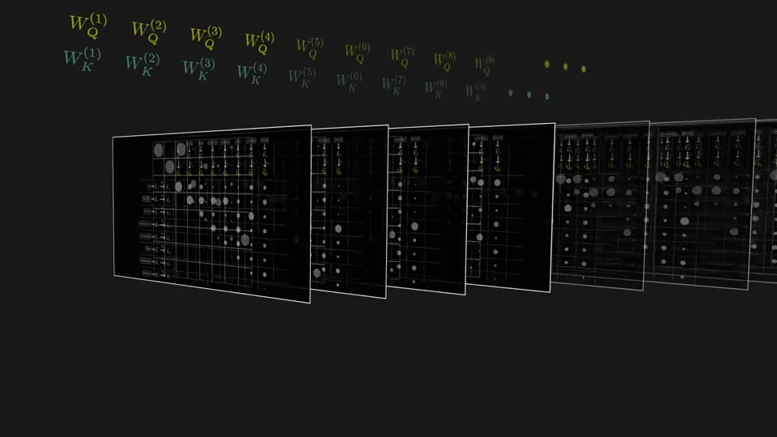
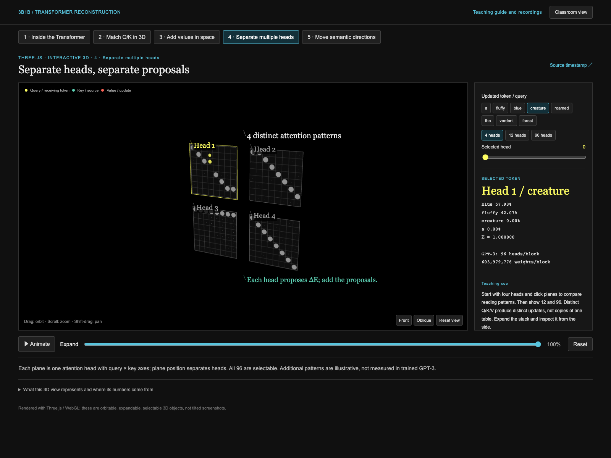
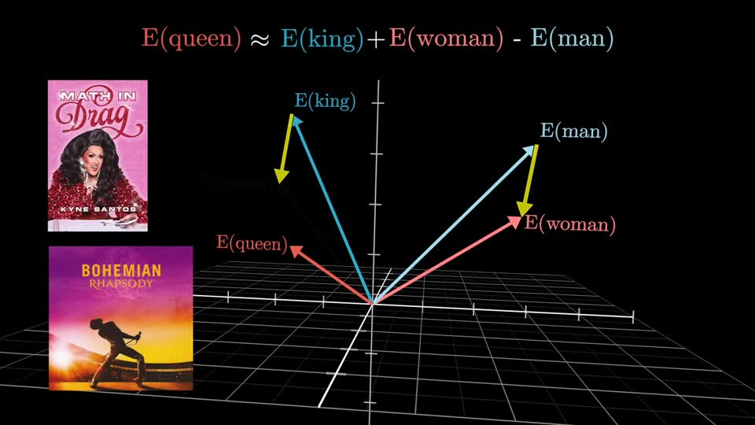
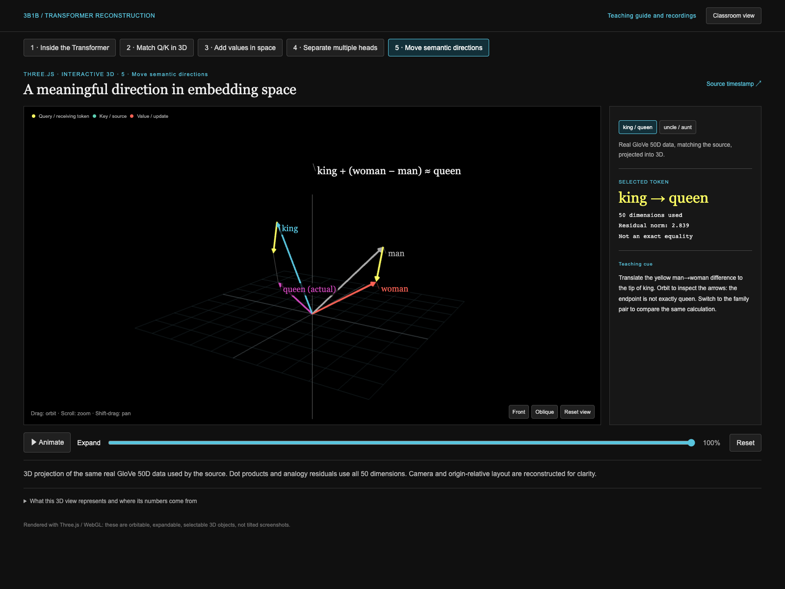

Source frames are on the left; actual browser screenshots are on the right. This compares meaning and structure, not pixel identity, and does not establish complete reproduction of source effects.


Preserved: eight token columns; attention connects positions, while the MLP works position-wise.
Changed or missing: the source uses staged camera movement; this view opens six planes simultaneously. Intermediate activations and some operations are illustrative.
Source video · Try it

Preserved: source query-column/key-row orientation and creature's relationship to fluffy/blue.
Changed or missing: the source matrix is laid flat with added height. Unpublished score precision is reconstructed, not an exact match.
Source video · Try it

Preserved: multiply values by weights and add the update to the original embedding.
Changed or missing: high-dimensional column-vector computation is represented by explicit three-component arrows.
Source video · Try it

Preserved: distinct head updates and the scale of 96 heads.
Changed or missing: selectable 3D planes replace the original choreography; additional heads are illustrative.
Source video · Try it

Preserved: translated man→woman difference, real GloVe 50D data, and the imperfect match to queen.
Changed or missing: 3D projection and pair-specific layout adjustments. Camera and label paths are not identical to the source.
Source video · Try itOriginal diagrams: 3Blue1Brown / Grant Sanderson. Sources and licensing